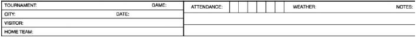

Heading second sheet

| Tournament |
Write the name of the competition (Olympic Games, World Cup, Intercontinental Cup, etc.). |
| Game |
Game number according to the official schedule. |
| City |
City where game takes place. |
| Date |
Day, month and year of the game. |
| Visitor |
Name of visiting team. |
| Home team |
Name of home team. |
| Attendance |
Number of official attendance as provided by Technical Commissioner [OBR 9.02(m)] |
| Weather |
Short remarks about the weather like ‘sunny’, ‘cloudy’, ‘clear’, ‘windy’, ‘partly cloudy’, ‘raining’, ‘drizzling’ |
| Notes: |
Write down everything that could help to clarify specifications of the game, except for disciplinary measures or other events that are not relevant. Note down all plays that might confuse a reader. For example, "FF8" is unusual, but if it really occurred, it should be explained in the notes. Interruptions to the game should also be noted, along with the reasons for such. If there is insufficient space an additional sheet may be attached. |
After the headings we shall now look at the main part, which is exactly alike on both sheets.